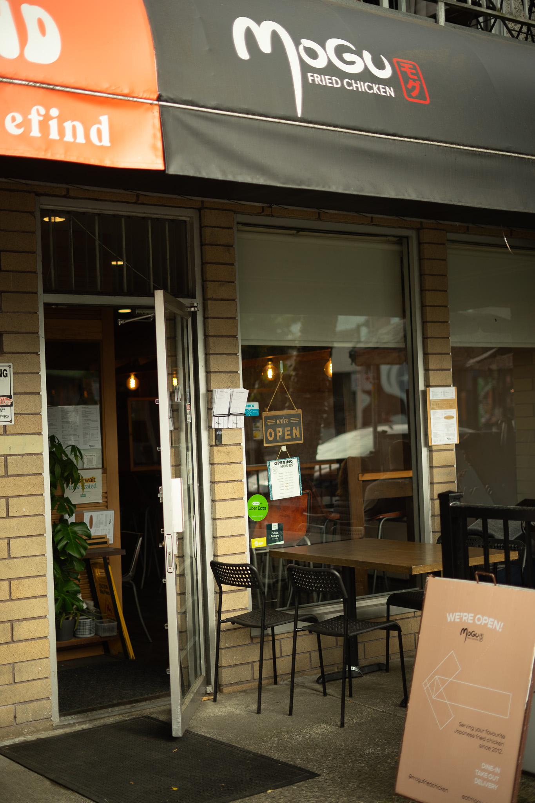
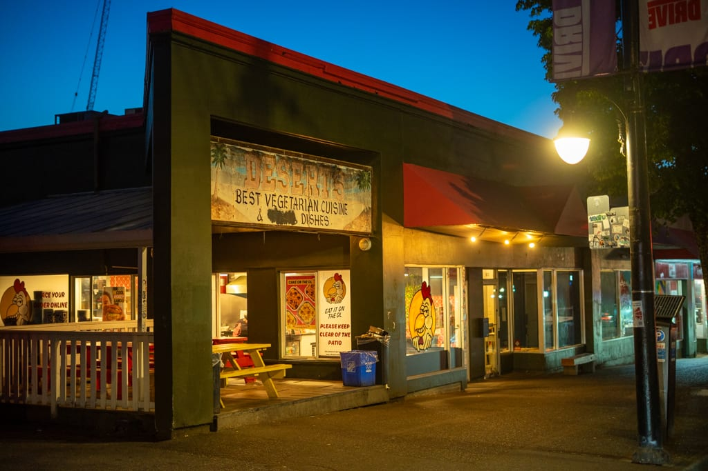

A World Cup Day on the Drive (Off Downtown)
Tap a stop to read more — open the guide to customize this route.
I've been lucky enough to experience Italy winning the Euros on Commercial Drive. The energy is unlike anything else you will experience. Unfortunately, as many of you know, Italy did not make this year's World Cup, but trust me, that won't affect the Drive. There is still a plethora of spots to check out to get all of your World Cup culture, grab a coffee, watch a game, and support some local businesses who are equally as excited about the World Cup. The neighborhood is home to the Portuguese Club, a Turkish/Mediterranean grocer, and many, many soccer fans. For me, I'd start the day early-ish. Head to the Drive on the Skytrain and walk up to Prado for a quick espresso and a "cookie with no name" to get the belly ready for the nerves of the day.

From there, you can walk around and find a spot for lunch or to watch the game. Don't Argue would be a great spot to get a slice of pizza, and if you can nab a table, you can likely watch a game (it's a small space, and will likely be tight). From there, you can wander to the Charlatan or any other bar or restaurant on the Drive; I'm sure most will be playing the game!
Post game, head further down the Drive and get some fried chicken from Mogu or Downlow while you observe ecstatic winners parading their colours around the neighborhood.
Either works — pick one in the guide

4. Mogu Fried Chicken

5. Downlow Chicken Shack
If you're in the mood for celebration, I'd say an ice cream from Earnest is probably in order. From there, you can walk back to the skytrain, or hang around the drive and see where the night takes you!